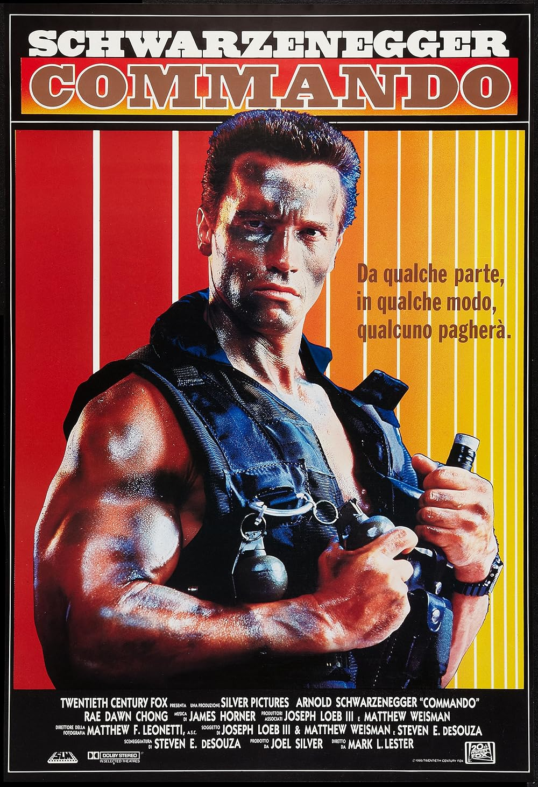

Фильм "Хищник" с Арнольдом Шварценеггером стал культовым произведением, которое оказало огромное влияние на жанр

Культовый боевик 80-х годов с Арнольдом. На момент выхода получил смешанные отзывы, но со временем его восприятие изменилось
 "Терминатор" с "Железным Арни" стал культурным феноменом и запустил целую цепочку фильмов. Продалжающиюся по сей день
"Терминатор" с "Железным Арни" стал культурным феноменом и запустил целую цепочку фильмов. Продалжающиюся по сей день
Фильм снова перевернул всю киноигру и укрепил статус Шварценеггера как ведущего Голливудского актера, открыв все двери для Арни